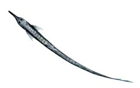
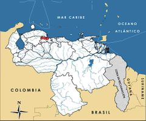

Farlowella martini
| Aguja del Aroa | |
|---|---|
|  | |
| Riesgo de extinción | |
 En peligro (UICN) | |
| Clasificación científica | |
| Reino: | Animalia |
| Filo: | Chordata |
| Clase: | Actinopterygii |
| Orden: | Siluriformes |
| Familia: | Loricariidae |
| Género: | Farlowella |
| Especie: | Farlowella martini |
| Nombre binomial | |
|
Farlowella martini Fernández-Yépez, 1972 | |
| Distribución | |
|
 Mapa de distribución de Farlowella martini | |
Contenido
Información de Evaluación
- Categoría y Criterio Regional: En Peligro B1ab(iii)
- Fecha de Evaluación Regional: 2015
- Evaluadores: Jesús Morales-Campos y Ariany García-Rawlins
- Categoría y Criterio Global: No Evaluado
Justificación
Evaluaciones Previas
1999: No Evaluado (NE)
2008: Vulnerable (VU)
Información General
Nombres comunes
Aguja del Aroa, palito, aguja, Aroa twig catfish, Aroa stick catfish.
Notas taxonómicas
Sinónimos
Descripción
Los bagres del género Farlowella presentan formas muy peculiares. La especie se caracteriza por un cuerpo muy delgado, alargado y cilíndrico, semejante a una rama, que le ha valido el nombre común de «corroncho agujita», y que está cubierto con numerosas placas óseas laterales y una aleta dorsal situada muy atrás. De tamaño mediano, su talla usual oscila entre 10 y 20 cm de longitud. Su coloración presenta diferentes tonalidades de marrón, con franjas verticales oscuras e irregulares; por lo general una de estas bandas envuelve al pez hasta la base de la dorsal. Dos cintas negras cubren los lados de la cabeza, desde la base del hocico, cruzando por los ojos, hasta los extremos de las aletas pectorales. Cuerpo y cabeza están salpicados de pequeñas manchas negras, al igual que todas las aletas. Una veta negra y delgada se extiende por el dorso, casi desde el origen de la aleta dorsal hasta un poco antes de los ojos. Presenta dimorfismo sexual, el hocico es pequeño y puntiagudo en la hembra, mientras que en el macho es aplanado y ensanchado en la punta, bordeado de odontodos mínimos, finos y rígidos.
Distribución
Especie endémica descrita con base en 14 ejemplares procedentes de los ríos Guarataro y Tupe, ambos afluentes del Aroa, en el estado Yaracuy (Fernández-Yépez 1972). También ha sido observada en aguas de las cuencas de Yaracuy (quebrada Guáquira) y Urama (río Alpargatón), este último en el estado Carabobo (Fernández-Yépez 1972, Retzer y Page 1996, Rodríguez-Olarte et al. 2006a). Es una especie herbívora restringida a hábitats litorales y frágiles, conformados especialmente por raíces y ramas sometidas a las corrientes de cauces hídricos con las cuales se mimetiza.
- Sistema: Dulceacuícola
- Bioregión:
- Intervalo altitudinal (m): Temporalmente sin información
- Endémica: Sí
Situación
Farlowella martini es ocasional aunque de distribución amplia en el sistema, sobre todo en las planicies e incluso en su desembocadura al mar. Esta distribución se estima que abarque una extensión de 21,22 km2. En muestreos estandarizados realizados durante varios años, este bagre presentó una abundancia infrecuente con una distribución difundida (Rodríguez-Olarte et al. 2006a) que apoyan su categoría de Vulnerable, a la que contribuye la susceptibilidad de su hábitat frente a las perturbaciones naturales y humanas (Rodríguez-Olarte et al. 2006b, Rodríguez-Olarte y Taphorn 2007). Otros organismos del mismo género (por ejemplo, Farlowella acus y Farlowella vittata), habitan sistemas vecinos en la cuenca del Caribe y se presume que han experimentado disminuciones de sus poblaciones debido al deterioro evidente de su hábitat.
- EOO (km2): 21,22
- AOO (km2): Temporalmente sin información
- Tendencia Poblacional: Desconocida
Amenazas
La principal amenaza que enfrenta F. martini está relacionada con la fuerte intervención antrópica y las perturbaciones en toda su área de distribución, especialmente, la conversión y la contaminación de los ambientes acuáticos (Rodríguez-Olarte et al. 2006a). La destrucción de la vegetación ribereña o la homogeneización de los cauces de los ríos pueden eliminar por completo sus poblaciones, sin embargo, todavía es posible observarla en ambientes intervenidos asociada a las gramíneas acuáticas en las corrientes. Además, en las cuencas de los ríos Aroa y Yaracuy se han introducido cuatro especies de coporos (Prochilodus spp.) y cachamas (Colossoma spp.), procedentes de otros cauces (especies transferidas), cuyos efectos sobre la ictiofauna autóctona aún no han sido evaluados, pero se considera que pudieran tener consecuencias negativas en el futuro. Otro peligro potencial es su valor ornamental, aunque el interés en la acuariofilia por los peces de este género es eventual (Rodríguez-Olarte 2005).
Conservación
Parte de las cuencas de los ríos Aroa y Yaracuy están protegidas por el parque nacional Yurubí y el monumento natural María Lionza, pero los límites inferiores de dichas áreas llegan hasta el piedemonte y por lo tanto no garantizan la conservación de la mayor riqueza de la ictiofauna regional, que tiende a ser más diversa y abundante en las zonas bajas y en las planicies (Rodríguez-Olarte et al. 2006b). El parque nacional San Esteban cubre las áreas bajas de pequeñas cuencas vecinas al río Aroa, pero aún no se conoce la presencia de la especie en esta zona. De igual forma, hay medidas de protección privada como la quebrada Guáquira (cuenca de Yaracuy), donde los ambientes son activamente protegidos y mantienen una riqueza de especies elevada. Con el propósito de contribuir con la conservación de ésta y otras agujas, se ha propuesto establecer alguna figura de protección oficial para determinados afluentes de la cuenca del Aroa (río Galápago), el cual presenta un caudal considerable y una menor intervención relativa del medio acuático y ribereño.
Autorías
Autores originales
Douglas Rodríguez-Olarte y Donald C. Taphorn
Colaboradores
Ilustrador
Loren Greg
Referencias
- Fernández-Yépez, A. (1972). Análisis ictiológico del Complejo Hidrográfico (04) Río Yaracuy. Ministerio de Obras Públicas, Dirección de Obras Hidráulicas. Caracas. 67 pp.
- Retzer, M. E. y Page, L. M. (1996). Systematics of the stick catfishes, Farlowella Eigenmann y Eigenmann (Pisces, Loricariidae). Proceedings of the Academy of Natural Sciences of Philadelphia 147: 33-88.
- Rodríguez, J. P. y Rojas-Suárez, F. (1999). Libro Rojo de la Fauna Venezolana, segunda edición. PROVITA, Fundación Polar. Caracas. 444 pp.
- Rodríguez, J. P. y Rojas-Suárez, F. (Eds.) (2008). Libro Rojo de la Fauna Venezolana, tercera edición. Provita y Shell Venezuela, S. A. Caracas, Venezuela. 364 pp.
- Rodríguez-Olarte, D. (2005). La biodiversidad y su conservación en el río Tocuyo de Venezuela: Una investigación sobre ríos, peces y bosques ribereños. Universidad Centroccidental Lisandro Alvarado (UCLA). Disponible en pegasus.ucla.edu.ve.
- Rodríguez-Olarte, D., Amaro, A., Coronel, J. y Taphorn, D. (2006a). Integrity of fluvial fish communities is subject to environmental gradients in mountain streams, Sierra de Aroa, North Caribbean coast, Venezuela. Neotropical Ichthyology 4(3): 319-328.
- Rodríguez-Olarte, D., Amaro, A., Coronel, J. L. y Taphorn, D. C. (2006b). Los peces del río Aroa, cuenca del Caribe de Venezuela. Memorias de la Fundación La Salle de Ciencias Naturales 164: 101-127.
- Rodríguez-Olarte, D. y Taphorn, D. C. (2007). Los peces de Aroa y Yaracuy: una guía para su conservación. Barquisimeto, Venezuela: Universidad Centroccidental Lisandro Alvarado (UCLA), Iniciativa de Especies Amenazadas (IEA-Provita). Primera edición digital en septiembre de 2007. Disponible en cdcht.ucla.edu.ve.
- Rodríguez-Olarte, D. y Taphorn, D. C. (2015). Aguja del Aroa, Farlowella martini. En: J.P. Rodríguez, A. García-Rawlins y F. Rojas-Suárez (eds.) Libro Rojo de la Fauna Venezolana. Cuarta edición. Provita y Fundación Empresas Polar, Caracas, Venezuela. Recuperado de: animalesamenazados.provita.org.ve/content/aguja-del-aroa Lun, 29/01/2018 - 12:10